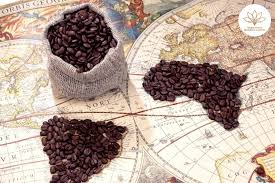
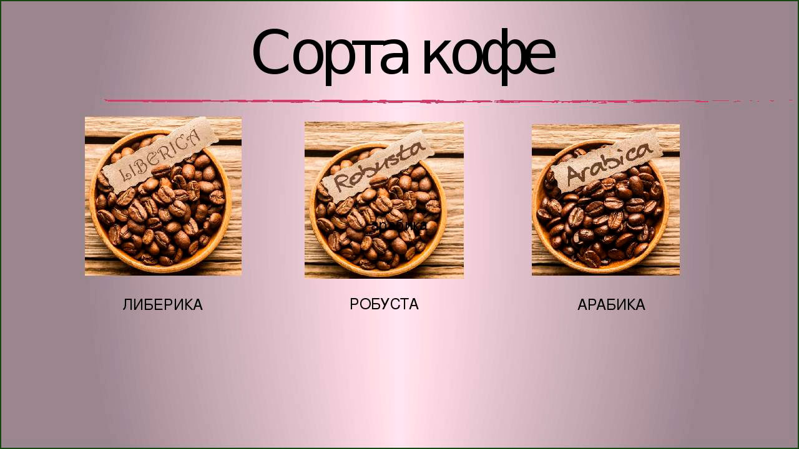

История кофе
Кофе — это один из самых популярных напитков в мире, история которого насчитывает несколько сотен лет. Согласно легенде, кофе был открыт в Эфиопии, когда пастух заметил, что его козы становятся бодрее после поедания ягод с одного кустарника.
Сорта кофе
Существует множество сортов кофе, однако два из них являются наиболее популярными: арабика и робуста. Арабика имеет мягкий вкус с фруктовыми нотками, в то время как робуста отличается более крепким и насыщенным вкусом.
